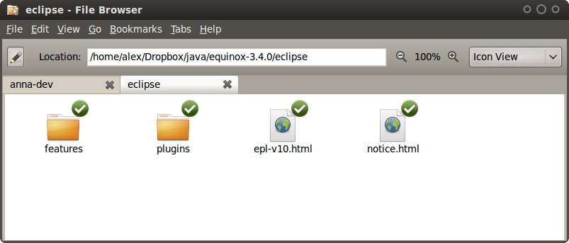
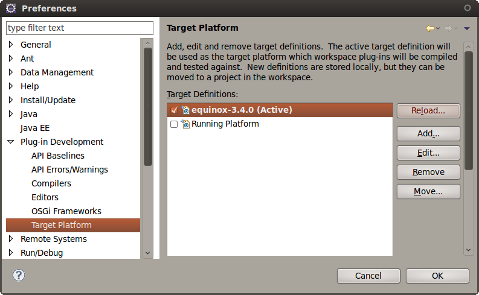

- Download Anna-Plug-Ins:
Extract to any location.
- Update your OSGi installation
Move extracted plugins-folder to your OSGi-installation directory. E.g. /home/alex/Dropbox/java/equinox-3.4.0/eclipse
This directory should already contain a plugins-folder. Merge it with the extracted one.
Alternatively you can also just grep all jar-files out of the framework folders (01* - 07*) and copy them into the plugins-folder.
- Reload Target Platform
In Eclipse, go to Window → Preferences.
Select Plug-in Development → Target Platform.
Click Reload... in order to make changes take effect.

- Done!
You are now ready to develop new framework-Steps with Eclipse.
Continue with Example one to see how to build a simple framework Step.